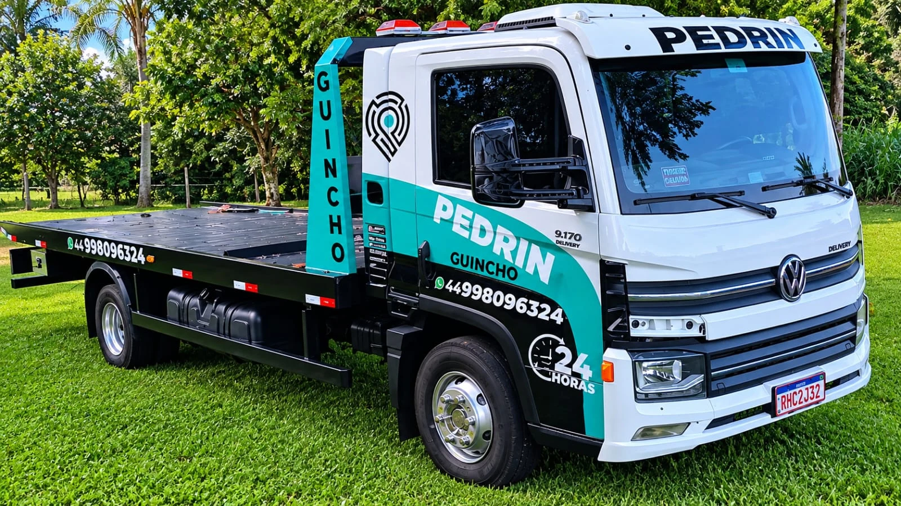
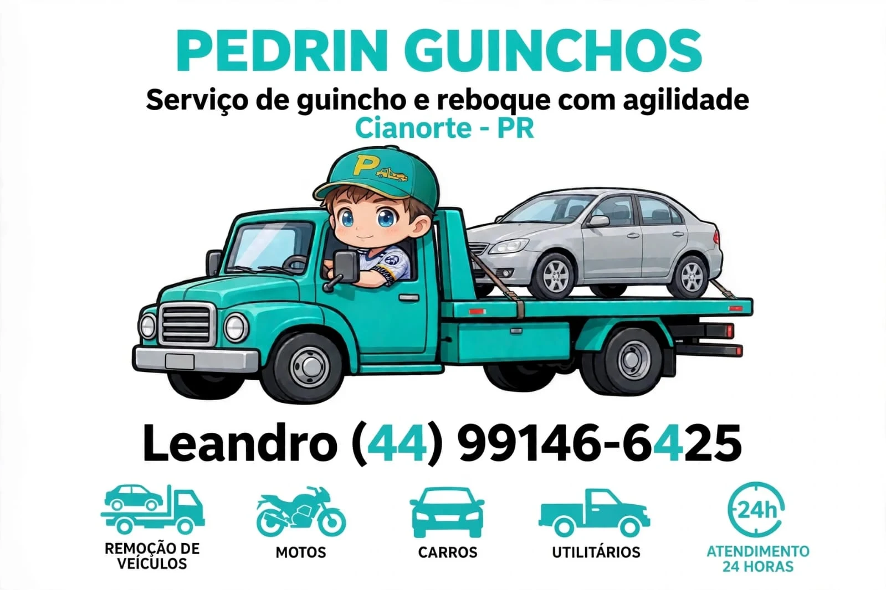

Guincho para carros
Seu carro precisa ser removido? Combine a retirada e o destino diretamente pelo WhatsApp.
Serviço de guincho e reboque com agilidade. Para quando seu caminho precisa de uma mão.
Pedir guincho pelo WhatsApp ↗
Remoção e transporte em guincho plataforma. Fale com a gente para combinar os detalhes do seu atendimento.
Seu carro precisa ser removido? Combine a retirada e o destino diretamente pelo WhatsApp.
Remoção de motocicletas com atendimento direto para entender o que você precisa.
Informe o modelo do veículo e a localização para consultar as condições do transporte.
Conheça o guincho plataforma da Pedrin. Uma estrutura dedicada à remoção do seu veículo.

Fale com Leandro e conte o que aconteceu.
Informe onde está, o modelo do veículo e o destino desejado.
Confirme o valor e a disponibilidade diretamente antes da remoção.
Guarde nosso contato. Quando precisar, é só chamar.